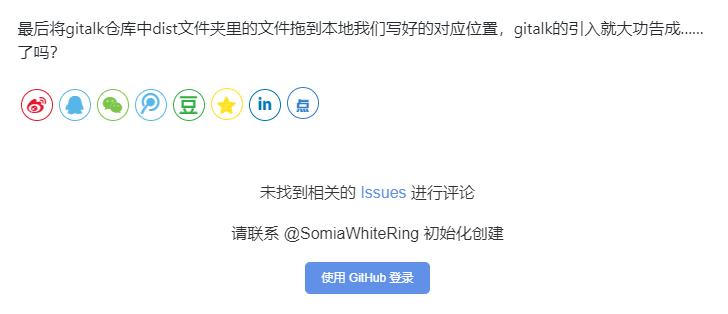

primer这个主题最后一次更新的时候，多说才刚刚关站不久，主题的制作者留下了Disqus和gitment两个备选项就对这个项目撒手不管脱离战线。而2021年的今天，gitment也成为了被放弃维护的烂尾项目的一员，disqus则是被封印在墙外难以正常使用。于是作为迟到了好几年的使用者，必须为评论系统找一份新的归宿——而顺理成章的，我挑上了以gitment继任者自居的gitalk。
找出gitment在原项目中的配置

多亏了vscode的全局搜索功能，我们很容易就能够定位到项目中运用了gitment的文件。其中，_config.yml指示了传达给gitment插件的参数，gitment-comments.js与article-post.ejs是负责将gitment插件实施到页面的html模块，style.styl负责引入gitment的css文件，default.css与gitment.browser.js则就是gitment插件的js与css文件。接下来，就让我们手把手的引领gitalk对gitment进行一次“鸠占鹊巢”。
先从html部分开始讲起
让我们先来看看article-post.ejs中关于引入gitment的部分：
1 | <%if(theme.disqus_username){%> |
可以简单的看出，如果你在_config.yml中填入了disqus_username，这个模块就会引导_widget/disqus-comments以渲染disqus评论区，否则会引导_widget/gitment-comments来渲染gitment评论区。在gitment已经不适用的现在，我们可以将后半部分的gitment-comments改为gitalk-comments，并在_widget文件夹下创建一个名称相对应的渲染模块。
至于这个渲染模块怎么创建，我们可以参考参考gitment-comments的写法：
1 | <div class="comments"> |
同时，我们可以拿出gitalk文档中的引用方法进行比对：
1 | var gitalk = new Gitalk({ |
可以看出，gitalk与gitment的设计方式是一脉相承的。我们只需要依照gitment中配置好的接口将gitalk的语句改头换面进去就行了。下面展示的是修改完成之后的结果。
1 | <div class="comments"> |
在本地引入gitalk的css与js库
在前文里我们修改了gitment中属于html的部分。而js与css部分则更加单纯——我们只需要从gitalk的github仓库上拖下来对应的js与css文件再完成引入就行了。js的引入我们已经在上文中做了修改（<%- js('js/gitment.browser') %>被修改为<%- js('js/gitalk') %>），css的引入则位于style.styl文件中：
1 | //gitmnet |
我们将原本的引入文本注释掉，重新加入gitalk的css
1 | //gitment |
最后将gitalk仓库中dist文件夹里的文件拖到本地我们写好的对应位置，gitalk的引入就大功告成了……吗？

笑死，我又在写bug哦。
Bug排除
然后，我开启了漫长的查bug之旅……
首先是发现自己把gitalk的名字打成了gittalk，打开搜索工具发现出现了一百多条gittalk这个本来不该存在的名字。一键全局替换……好的没有搞定bug依旧好端端的呆在那里。
之后我又拿出原本gitment版本渲染完成的界面进行比对，发现修改成gitalk后浏览器的container标签内不再渲染内容而这本来应该渲染出评论框，于是我把目光投向了渲染出评论的render……结果很相近了，但只差一步，我倒在自己看不懂的六万多行的代码之海里找不着头绪。
就在此时我才突然想到也许应该再看看官方文档……直到这个时候我才发现，gitalk的评论区是渲染在gitalk-container这个标签里的，也就是说必须要把container改为gitalk-container才能正常运行。于是我试着再度更改了gitment-comments的写法……
1 | <div class="comments"> |
好的来吧我要按下去(hexo s)了！

大 功 告 成！
碎碎念
这次折腾完加上上一篇感觉得整合整合把自己改掉的部分丢到自己fork的那个分支上……花了这么多时间折腾上这些只是这样写成博客太可惜了。话说回来这样算不算参加开源项目？所以那些参加开源项目的人都是用这种心情去改别人的代码的吗？！（哭笑不得）
另外就是为什么在Github pages上更新文章不算在commit里，周末两天的白框框看的我心在滴血，可恶。